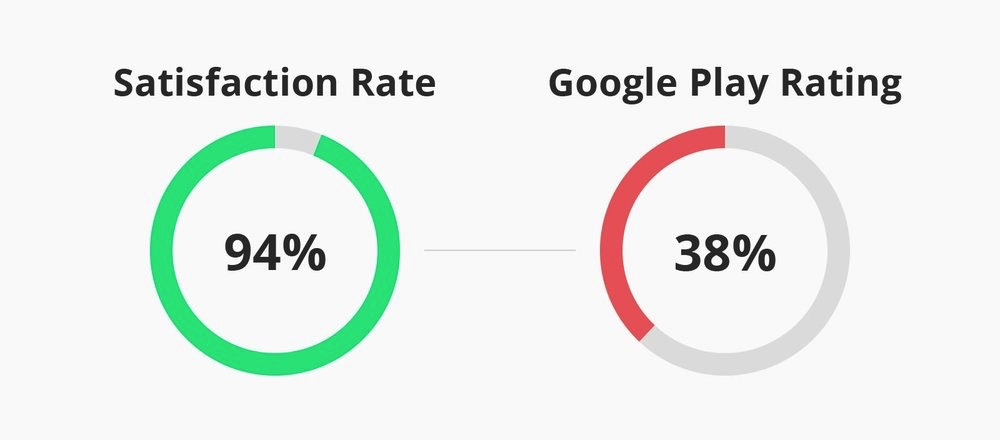
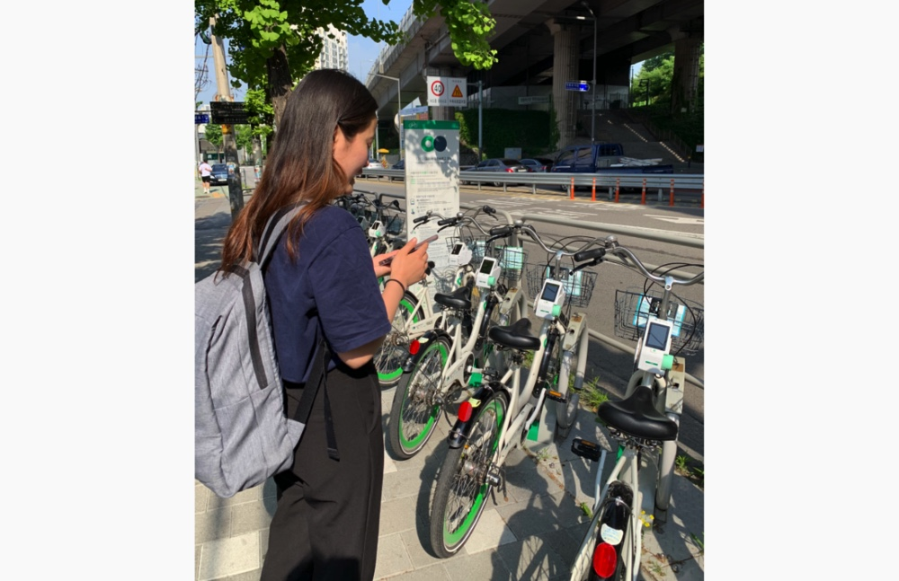
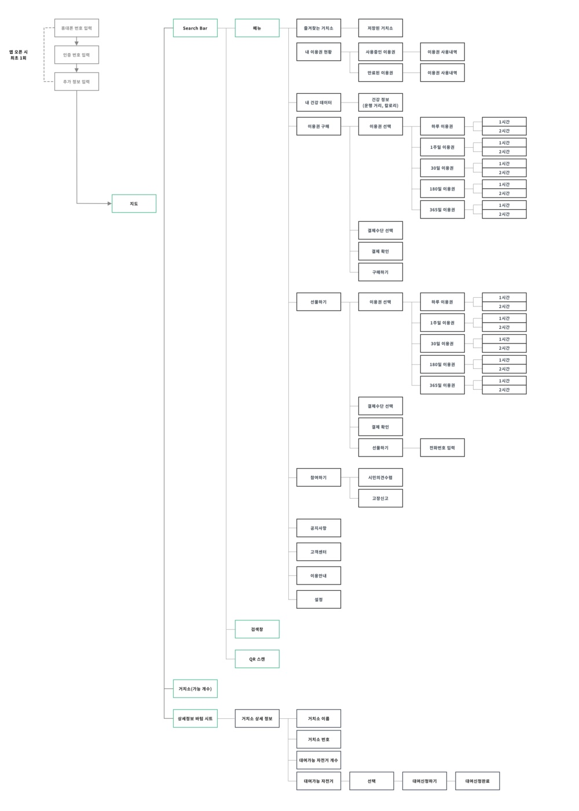
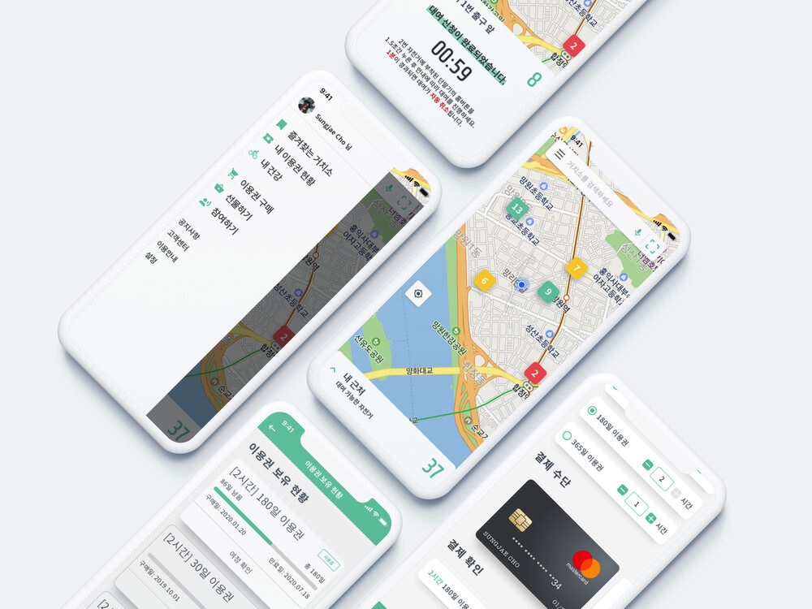
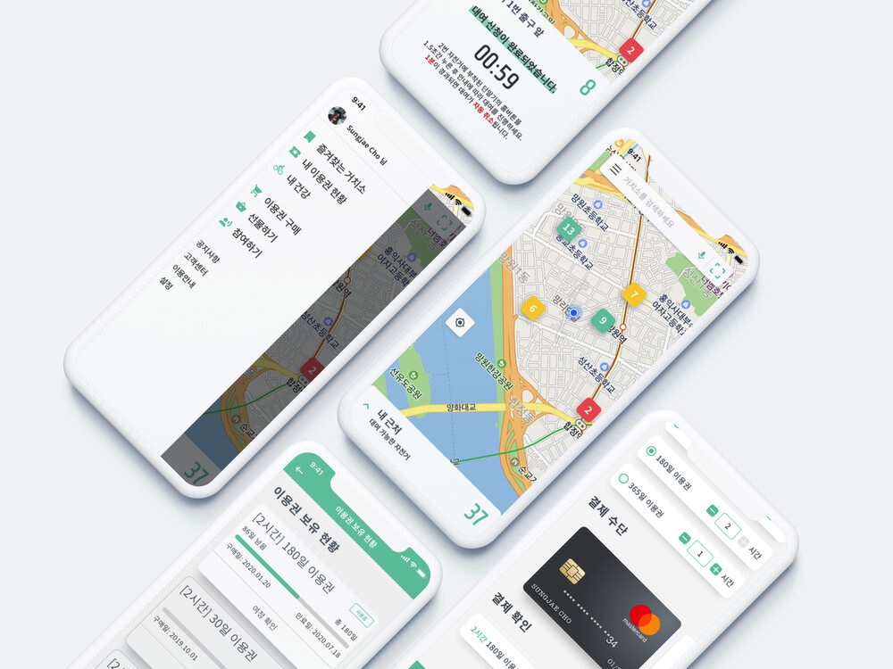

2015년 9월, 서울시는 파일럿 프로그램으로 공유 자전거 대여 시스템인 ‘따릉이’를 론칭했습니다. 처음에는 150곳에서 2,000대의 자전거로 시작했지만, 따릉이는 빠르게 서울 시민들 사이에서 입소문을 타며 유명세를 얻기 시작합니다. 론칭 3년 만에, 따릉이의 대여 가능한 자전거의 개수가 10배로 늘고, 사용자 수는 무려 120만 명을 돌파하게 되죠. 현재는 일 평균 2만 5,000명이 넘는 시민들이 따릉이를 이용하고 있고, 2018년에는 ‘내 인생을 바꾼 서울시의 탑 10 뉴스’에 따릉이가 2년 연속 1위로 등극하면서, 서울시에서는 없어서는 안 될 하나의 문화로 자리 잡게 되었습니다. 따릉이가 이렇게 많은 사람들에게 사랑받고 있음에도 불구하고, 따릉이 앱은 희한하게도 사용성이 떨어지기로 오랫동안 악명이 높다고 해요. 그런가 보다 했습니다. 직접 써보기 전까지는요.
따릉이에 대해서 리서치를 하는 동안, 저는 매우 흥미로운 점을 발견하게 됐습니다. 바로 따릉이에 대한 만족도와, 따릉이 앱에 대한 만족도가 정반대로 나타난다는 것이었습니다.
한국어로는 리뷰에 욕설이 너무 많은 관계로 번역기를 사용했습니다. 따릉이는 서울 시민들에게 매우 저렴한 가격으로 1-2시간을 선택해 자전거를 대여할 수 있게 해주는 훌륭한 서비스입니다. 문제는 따릉이를 이용하기 위해서는 앱을 사용해야 한다는 것이고, 앱은 도저히 사용할 수 없는 수준이라는 거죠. 마치 차 문을 열어야 하는데, 키가 고장 난 것과 비슷한 맥락입니다. 저도 앱을 처음 사용할 때 무척이나 애를 먹었었고, 리뷰 중에는 실제로 대여를 하기 위해 40분 동안 앱을 붙들고 있던 사용자도 있다고 하는 데요, 도대체 문제가 뭘까요?
따릉이 앱을 오픈하고 자전거를 대여하기까지의 프로세스에서 사용자 페인 포인트가 정확히 어디쯤 위치해있는지 파악하기 위해, 저는 간단한 사용자 관찰 세션을 진행했습니다. 관찰 세션을 시작하기에 앞서서 몇 가지 룰을 세웠는데요, 그 룰들은 다음과 같습니다:
사용자에게 따릉이 앱을 깔게 한 후, 저는 사용자에게 ‘앱을 사용해 앞에 있는 O번 자전거를 대여하세요’라는 미션을 주었습니다. 과연 사용자는 앱을 실행한 시점부터 대여까지 얼마나 걸렸을까요?
9분 37초. 사용자는 매우 똑똑하고, 모바일 환경에 강한 X세대 학생이었습니다. 그런데 이 X세대 사용자가 앱을 처음 오픈한 순간부터 자전거 대여를 완료하기까지, 총 9분 37초가 걸렸습니다. 네. 37초가 아니라, 9분 37초 맞습니다. 뜨겁고 습한 여름에 자전거 앞에 가만히 서서 약 10분이라는 시간동안 자전거 하나를 빌리기 위해 고군분투하는 기분은 어떤 기분일까요? 아마 제가 스타벅스 기프티콘을 두둑하게 쏜다고 하지 않았으면 그녀는 화가 나서 그냥 걸어갔을지도 모르는 일입니다. 여기서 문제는, 기술에 가장 적응이 빠른 X세대가 이 정도의 어려움을 겪었다는 겁니다. 과연 그녀의 부모님 세대인 40-50대 사용자들은 과연 몇 분이 걸렸을까요...? 관찰 세션을 진행하면서, 저는 첫 사용자들의 페인 포인트들에 대한 몇 가지 가설을 세울 수 있었습니다. 먼저, 관찰 세션을 바탕으로 자전거 대여 프로세스의 User Journey Map을 그렸고, 이후에 서비스 전체의 Information Architecture, 즉 정보구조를 그려보았습니다.


사용자 관찰 세션을 분석하고 유저 저니맵과 전체적인 정보구조를 생성하면서, 저는 크게 3가지 문제점을 도출했습니다.

기존의 따릉이는 사용자가 주로 쓰는 기능과 그렇지 않은 기능들이 같은 뎁스에서 서로 뒤죽박죽 얽혀있어 사용자가 목적을 달성하는데에 있어서 어려움이 있었습니다. 홈 화면과 첫 번째 글로벌 탭을 눌렀을 시의 화면이 상이하기도 하고, 상단의 메뉴 버튼과 글로벌 탭의 나의 공간, 이용권 구매 탭에 기능 및 정보가 중복되는 경우가 있었습니다. 이는 서비스의 IA(Information Architecture), 즉 정보구조가 정확하게 설계되지 않았기 때문입니다. 이를 해결하기 위해 저는 사용자에게 핵심적인 정보 및 기능들을 그룹화하고, 사용자 경험의 여정에 맞게 플로우를 연결하여 새롭게 IA를 설계했습니다.
따릉이의 주요 통계를 살펴보면, 서비스의 주 고객들은 직장인 혹은 대학생이라는 것을 유추할 수 있습니다. 그리고 전체 사용자들의 75%가 정기권을 구매하여 정기적으로 자전거 대여를 합니다. 출퇴근 시간을 중심으로 말이죠. 최소 1달에서 6개월, 길게는 1년에 한번 정기권을 구매하고 사용하는 이들에게 따릉이 앱의 핵심 기능은 과연 무엇일까요? …당연히 대여와 반납입니다. 사용자들은 탭바의 정중앙에 위치한 따릉이 ‘이용안내’ 틈만나면 탐독하거나, 첫번째 탭인 ‘나의 공간’에 들어가 회원정보를 열람하고, 메뉴에 들어가 따릉이 ‘사업소개’를 읽고 싶어하지 않습니다. 그냥 자전거를 빠르게 빌리고, 다 썼으면 반납하고 어서 집으로 가기를 희망할 뿐입니다.
사이드 바를 선택할 때에 있어서는 서비스의 유형을 명확하게 파악할 필요가 있는데, 이유는 특정 케이스를 제외하고는 사이드 바가 서비스의 사용성을 해칠 수도 있기 때문입니다. 예를 들어 컨텐츠가 많은 앱에서, 사용자가 자주 사용하는 메뉴를 사이드 바로 넣어버리면 화면에서 화면을 이동 때 불필요한 뎁스가 하나 더 생기는 샘이니까요. 하지만, 앱의 주 목적이 분명하고, 나머지는 모두 서브메뉴로서의 역할을 하고 있다면 어떻게 될까요? 절대 다수의 사용자가 서비스의 특정 중요한 기능을 압도적으로 많이 사용하는 경우에, 나머지 서브 기능과 메뉴들을 같은 층에 나란히 넓게 펼쳐 놓으면, 필요할 때 그 위치를 파악하기가 어려워지기 때문에 사용자들에게 더욱 혼란을 불러 일으킬 수 있습니다. 제가 따릉이에서 사이드바를 선택한 이유는, 사용자들에게 가장 중요한 기능들과 그렇지 않은 서브 메뉴들을 구분지어 인지시키고, 그들의 주 이용 목적에 자칫 노이즈가 될 수 있는 요소들을 최소화 하여 핵심에 집중할 수 있게 돕기 위해서입니다.


추가로, 거치소에 대여 가능한 자전거 숫자를 넣어 인지율을 높였습니다.
따릉이 앱의 핵심 기능은 바로 자전거 대여입니다. 하지만 기존 따릉이 앱에서 사용자가 자전거를 대여하기 위해서는 [거치소 선택] - [대여 버튼] - [자전거 선택] - [대여 버튼] - [대여 신청 완료 화면] - [X 버튼] 의 과정을 거쳐야만 홈 화면으로 복귀할 수 있었습니다. 저는 따릉이 앱을 리디자인하면서 대여 프로세스에 있어서 풀 페이지를 사용하지 않고 홈 화면에서 바텀시트를 활용하여 대여를 가능하게 했습니다. 대여 프로세스에 있어서 바텀시트를 활용하면서 얻는 이점은 다음과 같습니다:

따릉이 앱을 이용함에 있어서 사용자에게 극한의 스트레스를 주는 구간은 아마도 이용권 구매 프로세스라고 생각합니다. 따릉이 전체 사용자의 75%가 정기권을 사용하는 이유는 정기권의 가격이 일일권보다 압도적으로 저렴한 이유도 있겠지만, 일일권을 사용하여 매번 일일히 그 끔찍한 구매 프로세스를 경험하지 않기 위함도 한 몫하지 않을까 싶습니다. 따릉이 이용권을 개선하기 전에 한가지 알아두어야 할 점은, 따릉이는 사용자 한명당 1일 최대 2시간만 이용할 수 있다는 점 입니다. 대여 시간을 넘어 사용하게 되면, 비교적 높은 추가 금액이 분당으로 계산되어 징수됩니다. 이는, 최대한 많은 사람들이 자전거를 사용할 수 있도록 내놓은 서울시의 따릉이 수급 운영 방안으로 여겨집니다. 사용자가 따릉이 이용권 구매 화면에 진입하면, 총 5가지 옵션이 주어집니다. [정기권 구매하기], [일일권 구매하기], [단체권 구매하기], [정기권 선물하기], [일일권 선물하기]가 그 옵션입니다. 여기서 이용권을 선택하고 한 뎁스를 더 들어가게 되면, 사용자는 선택한 이용권에서 종류 별로 다르게 적용된 기준으로 이용권의 세부 옵션을 선택해야합니다. 예를 들어 사용자가 [정기권 구매]를 선택할 경우, 사용자는 정기권에서 <7일 1시간>, <30일 1시간>, <180일 1시간>, <365일 1시간>, <7일 2시간>, <30일 2시간>, <180일 2시간>, <365일 2시간> 중 하나를 선택해야 하는 것입니다. 애초에 이용권 구매 화면에 진입하면서부터, 구매하기와 선물하기와 이용권 종류가 뒤섞인 화면을 넘어, 작고 복잡한 글씨와 워딩들을 이해한 후, 이용권 종류별로 일관되지 않게 적용되지 옵션들을 선택해야 하기 때문에, 사용자로 하여금 엄청난 정보의 혼란성을 불러 일으킵니다. 저는 이 복잡한 문제에 직면하면서 다음과 같은 궁금증이 들었습니다.
추가로, 따릉이는 사용자의 결제 정보를 저장하거나 불러오지 않습니다. 따라서 일일권 사용자의 경우, 매번 이러한 복잡한 구매 프로세스를 걸쳐, PG사의 끔찍한 결제 정보 입력화면으로 들어가 엄청난 양의 정보를 텍스트로 일일히 입력해야 하는 것 입니다. 길 한복판에서 자전거 앞에 서서, 한 손에는 스마트 폰을 들고 다른 한 손에는 결제 카드를 든채 작은 글씨를 좌우로 번갈아 보며 하나하나 입력해야 하는 사용자를 떠올려보세요. 따릉이의 전체적인 구매 프로세스는 UX적으로 21세기에는 용납할 수 없는 범죄나 다름이 없다고 생각합니다.
따릉이 앱을 사용하다보면 종종 자신이 보유한 이용권 현황이 궁금해질 때가 있습니다. 사용중인 정기권은 며칠 남았는지, 사용하지 않은 일일권은 있는지, 언제 이용권을 사용했고 어디서 대여 및 반납을 했는지 등등에 대한 정보를 확인하고 싶을 때가 있는데, 현재 앱에서는 정보가 여기저기 흩어져 있으며 복잡한 워딩과 함께 헷갈리는 UI등으로 인해, 어디서 어떻게 정보를 확인해야하는지 알기 어렵습니다. 예를 들어, 사용자는 이용권 현황을 알고 싶을 때 다음과 같은 고민을 할 수 있습니다.
사용자가 원하는 정보를 한데 모아 쉽게 찾기 위해서는, UI뿐만 아니라 인지하기 쉬운 IA를 설계가 필수입니다.

 
